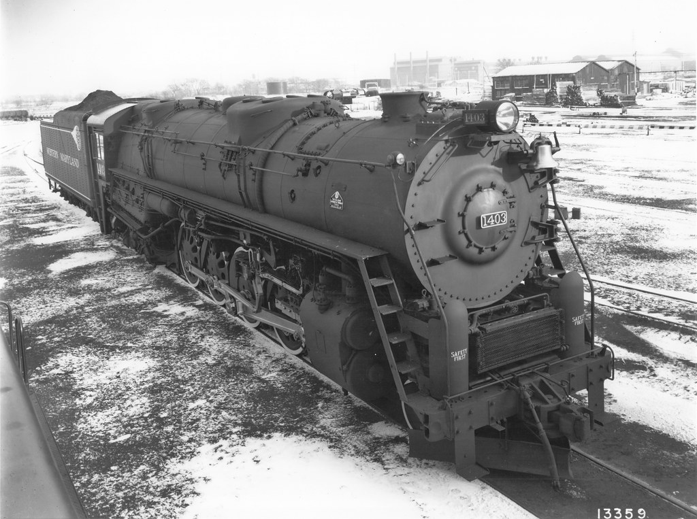

For 1947, we introduce a new generation of modern, efficient steam power, our Potomac class of 12 locomotives, capable of hauling 5500 tons.
These capable machines join an existing fleet of power, engineered by Baldwin of Philadelphia.
Ship it on the Western Maryland, we connect you to the world port of Baltimore and our trusted partners of the Reading, Norfolk and Western, Pittsburgh and West Virginia, Chesapeake and Ohio, and other railroads across the nation.